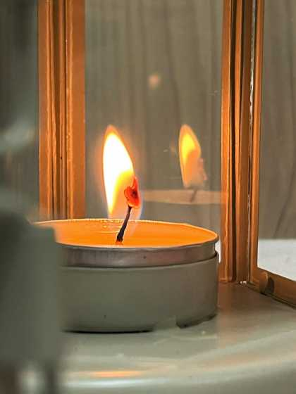

お店のこと
佐野市奈良渕町の住宅街にある、小さなパン屋さんです。紹介記事やグルメサイトでは、無添加で厳選した素材を使い、パンを1つずつ丁寧に作っていること、気に入ったパンの取り置きができることが紹介されています。ハード系のパンは昼すぎに焼きたてが並ぶそうです。
オーナーについては、学生時代から「おいしいもの大好き」だった想いが、いまのパン屋さんにつながっていると紹介されています。
制作側のイメージ
「hygge(ヒュッゲ)」はデンマーク語で、居心地のよさやくつろぎを表す言葉と言われます。屋号の由来は確認できていないため、このページの暖かな色合いは制作側のイメージです。


口コミ
イメージ例
以下は制作側が作った例文で、実在の声ではありません。
ぶどうがぎっしりで、ひと口目からうれしくなりました。
住宅街の小さなお店で、あたたかい雰囲気。また寄りたいです。
焼きたてのパンの香りに包まれて、買う時間まで楽しめました。
あかりのある時間(イメージ)




アクセス
| 住所 | 〒327-0842 栃木県佐野市奈良渕町311-23 |
|---|---|
| @bakery_hygge |